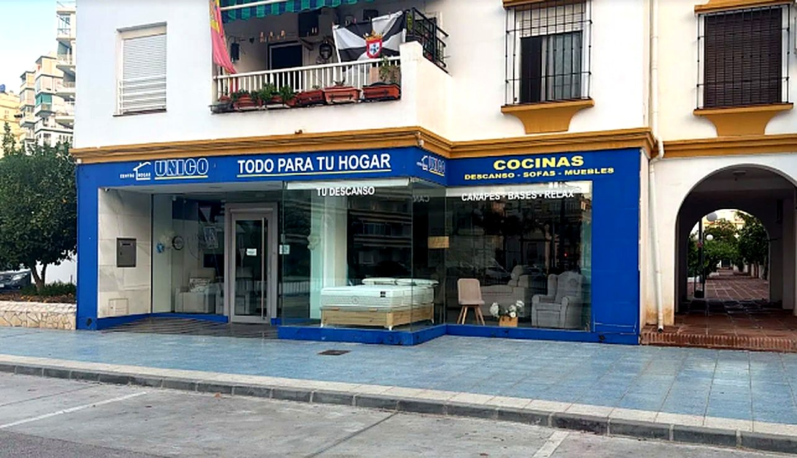

Miriam will help you
Centro Hogar Axarquía · Cómpeta
Address: Av. de la Constitución, 2, 29754 Cómpeta (Málaga)
Phone: 663 83 35 77
Mon–Fri 10:00–13:30 & 17:30–20:30 · Sat 10:00–13:30 · Sun closed
Three stores: two Centro Hogar Único stores in Torre del Mar and Centro Hogar Axarquía in Cómpeta.
Address: Av. de la Constitución, 2, 29754 Cómpeta (Málaga)
Phone: 663 83 35 77
Mon–Fri 10:00–13:30 & 17:30–20:30 · Sat 10:00–13:30 · Sun closed
Address: Av. de Andalucía, 38, 29740 Torre del Mar (Málaga)
Phone: 952 54 09 32
Mon–Fri 10:00–13:30 & 17:30–20:30 · Sat 10:00–13:30 · Sun closed

Address: C. Azucarera, 2, Torre del Mar (Málaga)
Mon–Fri 10:00–13:30 & 17:30–20:30 · Sat 10:00–13:30 · Sun closed
Opinions published on Google about the Centro Hogar Axarquía store in Cómpeta, shown in their original language. They refer to that store, not to the Torre del Mar stores.
“From entering the store in Cómpeta looking for a good quality bed having recently moved to the area from the UK. The advice and support we got was outstanding …”
“Miri is really patient and helpful, takes her time to explain and answer my endless questions! Bought gas hob, bed & bedframe ...so far. Good communication …”
“Miriam is extremely helpful. We are pleased with our new air con unit and she organized installation too at a very reasonable price. We will definitely use Centro Hogar again.”
“No he ido nunca a esta tienda, pero hoy he llamado por teléfono y me han atendido muy bien …”
“Compré una lavadora y estoy encantada. Pero lo que realmente quiero destacar es la atención de la compradora. La …”
“Gran variedad de muebles, electrodomésticos, colchones y todo lo que necesites para equipar tu casa. Atención inmejorable, Miriam podrá orientarte y ayudarte a …”
“Muy buena atención al cliente desde primera hora, nos aconsejó en todo momento para tomar la mejor decisión, una vez montado los muebles, fue mucho mejor de lo …”
“Ha sido una muy buena experiencia. Tuve que hacer el pedido por WhatsApp por no vivir cerca y Miriam fue de lo más atenta y comprensiva. Me ayudó mucho a elegir y tuvo mucha paciencia conmigo. Volvería a repetir seguro y repetiré.”
“very good selection, wonderful service on site, fantastic service with home delivery as well as installation and removal of the old unit.”
“Muy buena atención al cliente, Míriam es maravillosa y te puede ayudar con todo lo que necesites y asesorarte genial. Sin duda volvería a repetir. Muchas gracias por tu ayuda.”
“Un gusto venir a comprar aquí. El asesoramiento a lo que busques es excepcional, te recomienda siempre lo …”
“Muy buen trato, hay mucha variedad y si algo no tiene te lo trae de un día a otro”
“Tienda muy bien situada con muchas opciones y la vendedora es muy profesional y muy eficiente lo recomiendo”
“Wat ben ik blij dat deze winkel in Competa zit. Ik heb hier al veel spullen gekocht waarbij Miri ons heel goed heeft geholpen. Ze is met vragen heel snel in de communicatie wat we erg waarderen.”